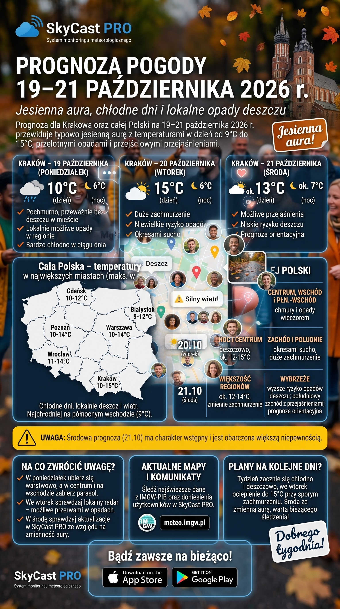
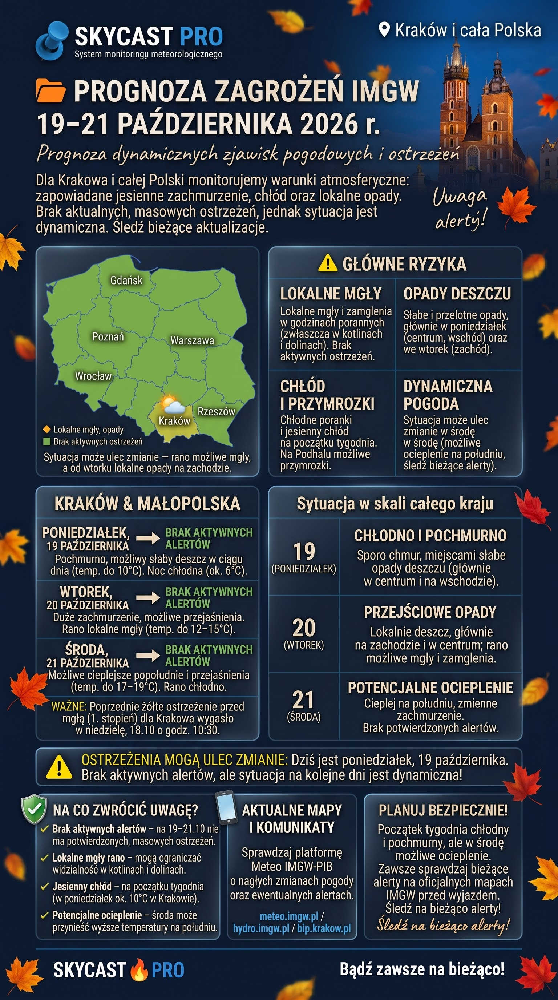

☀️ Sobotni Poranek (24.10) – Jaki masz plan?
>Rzut oka za okno, łyk kawy ☕ – co się dzieje u Ciebie
Skanowanie radarów informacyjnych...

Przez 10 lat stałem przy gorącym piecu jako pizzaiolo. Znam smak ciężkiej pracy i wiem, co to znaczy działać na pełnych obrotach. Ale w życiu każdego faceta przychodzi taki moment, że trzeba coś zmienić i pójść za tym, co zawsze siedziało w głowie.
Dlatego postawiłem wszystko na jedną kartę. Zamieniłem piec na klawiaturę i wkręciłem się w IT. Uczę się cyberbezpieczeństwa, testuję sztuczną inteligencję i buduję własne systemy (jak mój projekt pogodowy SkyCast PRO). Małymi krokami, ale cały czas do przodu.